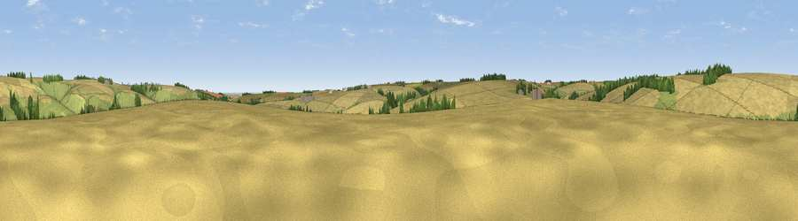

Viewpoint near Thixendale
#37380 in England · top 76% of its area beats it · near Thixendale · access?Where it is
The exact computed spot (SE 86525 61925). Click the marker for map links.
Public access: no public right of way or access land is recorded at this exact spot — it may be on private land. Computed from Natural England's CRoW access layer and OpenStreetMap rights of way — not the legal definitive map. Always verify locally.
The view, rendered

A 360° render of this exact spot computed from the terrain model, tree cover and land cover — summer colours, afternoon light, calibrated against photographs of famous viewpoints. Real trees, hedges and buildings will differ in detail.
The panorama
Grey silhouette: terrain skyline in each direction (720 bearings, Earth curvature and refraction included). Dashed green: skyline with trees (+15 m) and buildings (+8 m) as obstacles. Blue strip: how far the ground is visible on each bearing.
Where the view opens
Wedge length = distance to the farthest visible ground on that bearing (vegetation-aware). Rings at 10, 25 and 50 km.
What fills the view
77% cropland · 19% grassland · 4% woodland
Angular shares of the visible panorama (visual magnitude), not map area. Landscape diversity 0.29 (0–1 Shannon).
Key numbers
More beautiful places nearby
The staircase of upgrades: each row has a higher view potential than everything closer. Driving times are estimates from straight-line distance, calibrated against real road routing — check an actual route before setting out.
| Place | Direction | Drive | Score |
|---|---|---|---|
| Viewpoint near Fimber | E · 2 km | ~5 min | 43.4 |
| Viewpoint near Birdsall | WNW · 4 km | ~9 min | 61.8 |
| Viewpoint near Birdsall | NW · 5 km | ~12 min | 62.5 |
| Viewpoint near Birdsall | WNW · 6 km | ~13 min | 71.8 |
| Viewpoint near Acklam | W · 7 km | ~14 min | 73.8 |
| Seamer Beacon | NNE · 29 km | ~46 min | 76.9 |
| Olivers Mount | NE · 30 km | ~48 min | 80.3 |
| Viewpoint near Ravenscar | NNE · 41 km | ~60 min | 87.3 |
54.04604, -0.68004 · source: screening · position refined by local search. Computed location — check access rights before visiting.